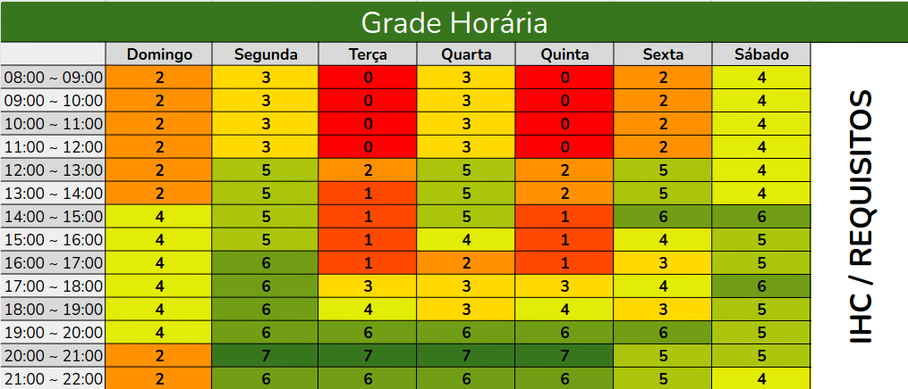

Planejamento do Projeto
Nesta seção, você encontrará informações detalhadas sobre o planejamento do nosso projeto. Isso inclui o heatmap de disponibilidade dos integrantes, o aplicativo selecionado, os termos de uso do aplicativo, as ferramentas do projeto, um cronograma detalhado e o rich picture.
Heatmap de Disponibilidade
Para simplificar a organização de encontros e assegurar a contribuição eficaz de cada integrante da equipe, o heatmap visa identificar os períodos mais convenientes para todos os membros. Ao reunir esses dados, será possível elaborar um cronograma de reuniões que respeite as limitações de horário de cada pessoa, fomentando a envolvimento ativo de todos.
A identificação dos horários em que os membros da equipe estão livres foi realizada por meio de um mapa de calor. Cada integrante da equipe preencheu uma tabela com os horários em que está disponível para reuniões. Em seguida, os dados foram compilados em um mapa de calor onde o número mais baixo indica que os integrantes não estão disponíveis naquele horário e o número mais alto indica que a maioria ou o grupo em sua totalidade está disponível.
Imagem do Heatmap

Resultados da Análise de Disponibilidade
Com base na avaliação do Heatmap, identificamos os seguintes horários como os mais adequados para as reuniões do Grupo 3:
- Segunda-feira: 20:00 - 21:00
- Terça-feira: 20:00 - 21:00
- Quarta-feira: 20:00 - 21:00
- Quinta-feira: 20:00 - 21:00
Após uma votação entre os membros, ficou estabelecido que:
- As reuniões de planejamento (Plannings) ocorrerão às segundas-feiras, das 20:00 às 21:00.
- As reuniões de atualização de status (Status) serão realizadas às quintas-feiras, também das 20:00 às 21:00.
Histórico de Versões
| Versão | Data | Descrição | Autor | Revisor |
|---|---|---|---|---|
| 0.1 | 11/09/2023 | Planejamento Heat Map | Caio Lelis | Revisor1 |
Aplicativo Selecionado
Descrição do aplicativo que foi escolhido para o projeto, incluindo suas funcionalidades e por que foi selecionado.
Termos de Uso
Cópia dos termos de uso do aplicativo, permitindo o uso nas disciplinas. Certifique-se de ler e entender todos os termos antes de prosseguir com o projeto.
Ferramentas do Projeto
Lista e descrição das ferramentas que serão usadas no projeto, como sistemas de controle de versão, plataformas de comunicação, etc.
Cronograma Detalhado
Cronograma detalhado das atividades do projeto, incluindo a data de início e fim de cada atividade, os responsáveis e a gravação da apresentação.
| Atividade | Data de Início | Data de Fim | Responsáveis |
|---|---|---|---|
| Atividade 1 | 01/10/2023 | 07/10/2023 | Integrante 1, Integrante 2 |
| Atividade 2 | 08/10/2023 | 14/10/2023 | Integrante 3, Integrante 4 |
| ... | ... | ... | ... |
Rich Picture
Descrição e imagem do Rich Picture, fornecendo uma visão geral dos sistemas, stakeholders e interações.
Imagem do Rich Picture